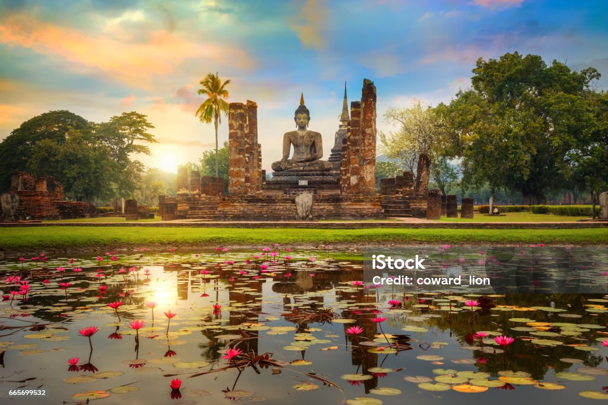
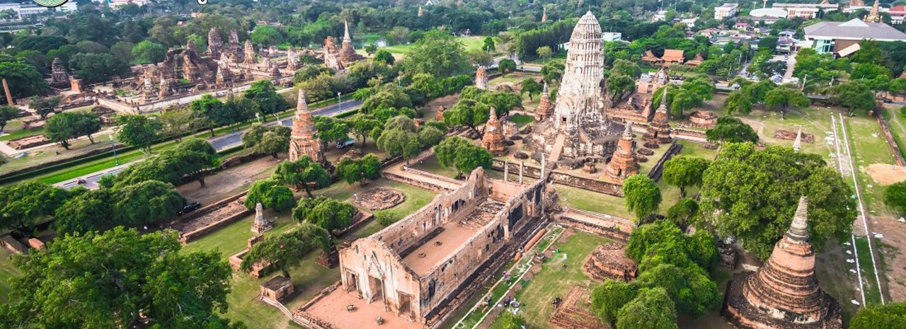
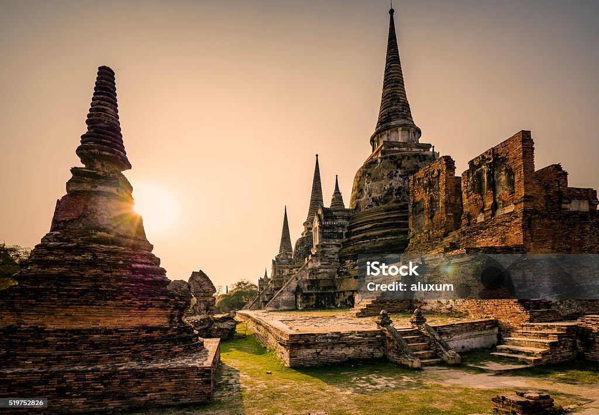
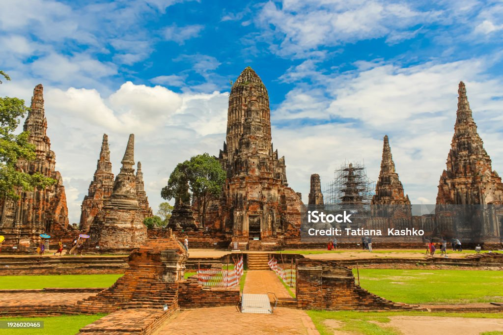
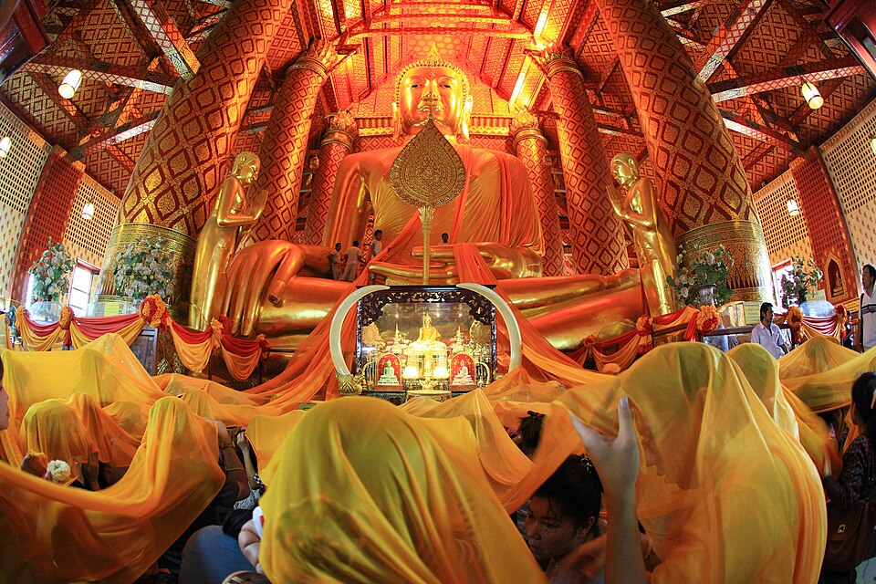
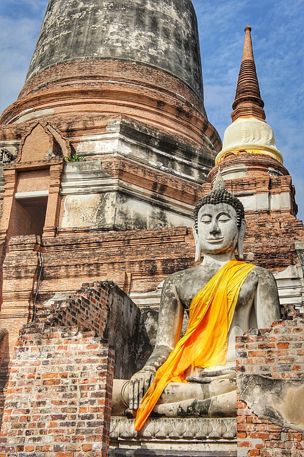
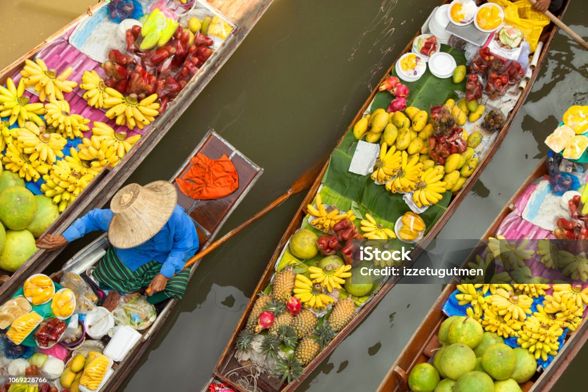
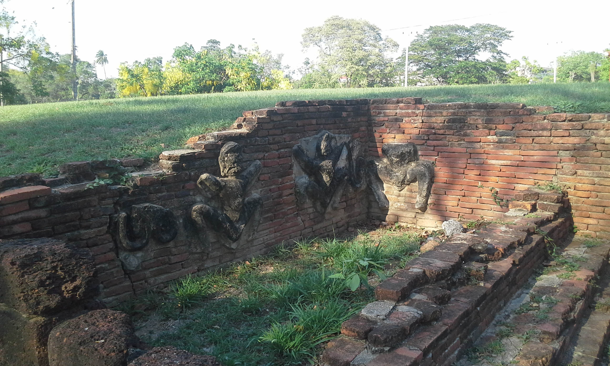
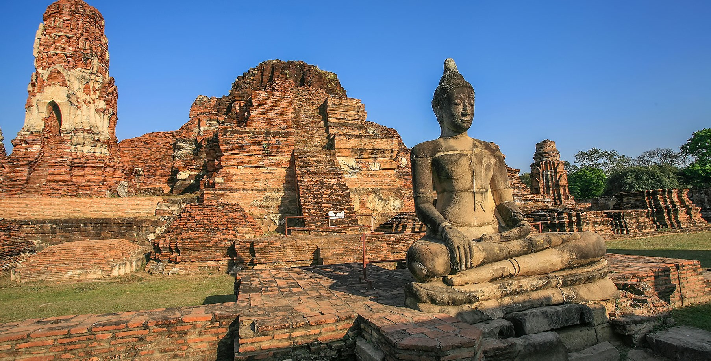

อยุธยาไม่ได้มีเพียงโบราณสถานที่มีชื่อเสียง แต่ยังเต็มไปด้วยวัดเก่าแก่ พระราชวัง ตลาด และสถานที่ ที่สะท้อนเรื่องราวของผู้คนในอดีต
กรุงศรีอยุธยาเป็นเมืองประวัติศาสตร์ ที่มีโบราณสถานจำนวนมาก กระจายอยู่ทั้งบริเวณเกาะเมือง และพื้นที่โดยรอบ แต่ละสถานที่มีเอกลักษณ์ ทั้งด้านสถาปัตยกรรม ศาสนา ประวัติศาสตร์ และวิถีชีวิต

วัดมหาธาตุเป็นหนึ่งในโบราณสถาน ที่สำคัญที่สุดแห่งหนึ่งของอยุธยา ตั้งอยู่บริเวณใจกลางเมืองเก่า
สิ่งที่มีชื่อเสียงมากที่สุดคือ เศียรพระพุทธรูปที่อยู่ท่ามกลาง รากไม้ ซึ่งกลายเป็นสัญลักษณ์ สำคัญของพระนครศรีอยุธยา
นอกจากนั้นภายในพื้นที่ยังมี ปรางค์ เจดีย์ และซากอาคาร ที่สะท้อนรูปแบบศิลปกรรม ของอยุธยา
แลนด์มาร์กของอยุธยา
วัดราชบูรณะเป็นโบราณสถาน ที่มีปรางค์ประธานขนาดใหญ่ เป็นจุดเด่นของพื้นที่
สถาปัตยกรรมของปรางค์ แสดงให้เห็นถึงรูปแบบงานช่าง และความเชื่อทางศาสนา ของผู้คนในสมัยอยุธยา
บริเวณวัดยังมีโบราณสถาน และร่องรอยศิลปกรรม ที่ช่วยให้ผู้ชมเข้าใจ ประวัติศาสตร์ของเมืองมากขึ้น
ปรางค์ประธาน
วัดพระศรีสรรเพชญ์ตั้งอยู่ในบริเวณ พระราชวังหลวงของกรุงศรีอยุธยา และเป็นพระอารามหลวงที่สำคัญ
บริเวณวัดมีเจดีย์สามองค์ ที่ตั้งเรียงกันอย่างโดดเด่น และเป็นภาพที่รู้จักกันอย่างแพร่หลาย
สถานที่แห่งนี้จึงเป็นจุดสำคัญ สำหรับการเรียนรู้เกี่ยวกับ ราชสำนักและศาสนาในอดีต
พระอารามหลวง
วัดไชยวัฒนารามตั้งอยู่ริมแม่น้ำเจ้าพระยา และเป็นหนึ่งในโบราณสถาน ที่มีสถาปัตยกรรมโดดเด่น
ปรางค์ประธานตั้งอยู่ตรงกลาง และมีปรางค์บริวารรายล้อม ทำให้เกิดองค์ประกอบ ทางสถาปัตยกรรมที่สมดุล
ช่วงเย็นเป็นเวลาที่นักท่องเที่ยว นิยมเดินชมและถ่ายภาพ เนื่องจากบรรยากาศริมแม่น้ำ มีความสวยงาม
ริมแม่น้ำเจ้าพระยา
วัดพนัญเชิงวรวิหารเป็นวัดเก่าแก่ ตั้งอยู่บริเวณใกล้จุดบรรจบ ของแม่น้ำป่าสักและแม่น้ำเจ้าพระยา
ภายในวัดมีพระพุทธรูปขนาดใหญ่ คือพระพุทธไตรรัตนนายก หรือหลวงพ่อโต ซึ่งเป็นที่เคารพสักการะ
วัดแห่งนี้ยังเป็นสถานที่ ที่สะท้อนความสำคัญของศาสนา ต่อผู้คนในพื้นที่
ศาสนสถานสำคัญ
วัดใหญ่ชัยมงคลเป็นหนึ่งใน โบราณสถานสำคัญของอยุธยา และมีเจดีย์ขนาดใหญ่เป็นจุดเด่น
รอบเจดีย์มีพระพุทธรูปเรียงราย สร้างเป็นภาพที่โดดเด่น และสะท้อนรูปแบบการจัดวาง ศาสนสถานในอดีต
เป็นอีกหนึ่งสถานที่ ที่นักท่องเที่ยวนิยมเดินทาง ไปสักการะและชมโบราณสถาน
เจดีย์ชัยมงคล
พื้นที่ตลาดน้ำและแหล่งท่องเที่ยว ช่วยให้นักท่องเที่ยวได้สัมผัส บรรยากาศการค้าขาย และวิถีชีวิตของผู้คน
ภายในมีทั้งอาหารพื้นถิ่น ขนม ของฝาก และสินค้าชุมชน ที่สามารถซื้อกลับไปเป็นที่ระลึก
วิถีชีวิตและของฝาก
พระราชวังโบราณเป็นพื้นที่ ที่เกี่ยวข้องกับพระราชสำนัก และการปกครองของกรุงศรีอยุธยา
ปัจจุบันยังคงมีร่องรอย ฐานอาคาร แนวกำแพง และโบราณสถานต่าง ๆ ให้ศึกษา
พื้นที่แห่งนี้ช่วยให้เห็นภาพ ของศูนย์กลางอำนาจ ในเมืองหลวงของอยุธยา
ราชสำนักอยุธยา
อุทยานประวัติศาสตร์พระนครศรีอยุธยา ประกอบด้วยโบราณสถานจำนวนมาก ที่กระจายอยู่ในพื้นที่เมืองเก่า
นักท่องเที่ยวสามารถเดินทาง ไปชมวัด เจดีย์ พระราชวัง และซากอาคารต่าง ๆ เพื่อเรียนรู้เรื่องราวของเมือง
พื้นที่ทางประวัติศาสตร์แห่งนี้ เป็นส่วนสำคัญของมรดกทางวัฒนธรรม ที่สะท้อนความรุ่งเรืองของอยุธยา
เมืองเก่าอยุธยาสามารถชมวัด เจดีย์ ปรางค์ และซากอาคารจำนวนมาก ที่กระจายอยู่ทั่วเมืองเก่า
สามารถเดินทางชมสถานที่ต่าง ๆ ด้วยจักรยาน รถยนต์ หรือพาหนะท้องถิ่น
สถาปัตยกรรมเก่าแก่ และบรรยากาศของเมือง ทำให้มีมุมถ่ายภาพมากมาย
โบราณสถานหลายแห่งเป็นพื้นที่กลางแจ้ง ควรเตรียมน้ำดื่ม หมวก และอุปกรณ์ป้องกันแดด
เมื่อเข้าวัดหรือศาสนสถาน ควรแต่งกายสุภาพ และปฏิบัติตามกฎของสถานที่
ไม่ปีนป่ายหรือสัมผัสโบราณสถาน ในบริเวณที่มีข้อห้าม เพื่อช่วยรักษามรดกทางวัฒนธรรม
ควรวางแผนสถานที่ที่ต้องการไปล่วงหน้า เพราะอยุธยามีสถานที่สำคัญ จำนวนมาก